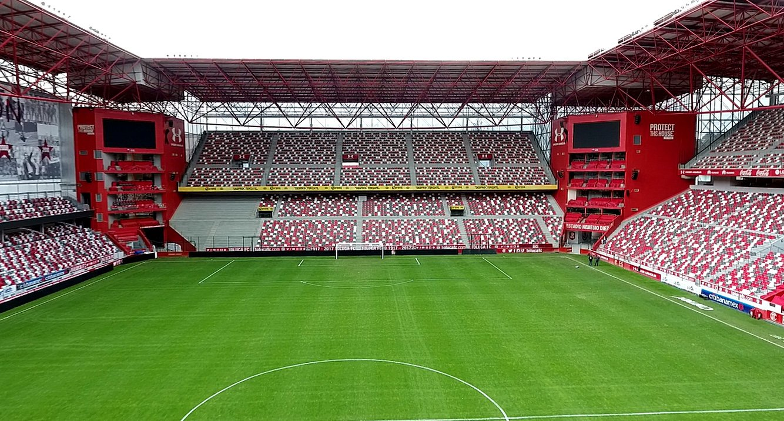

Estadio Nemesio Diez
Estadio Nemesio Diez:
La Joya de la Capital Mexiquense. El Estadio Nemesio Diez, conocido como "La Bombonera", es un lugar emblemático en Toluca, México, donde se celebran emocionantes partidos de fútbol. Con una capacidad de 30,000 espectadores, el estadio ha sido testigo de momentos históricos y ha sido sede de partidos en las Copas del Mundo de 1970 y 1986.
- Constituyente Pte. 1000, Barrio de San Bernardino, 50080, Toluca de Lerdo, Estado de México.
- Con una capacidad de 30,000 espectadores.
- 722 214 5709

